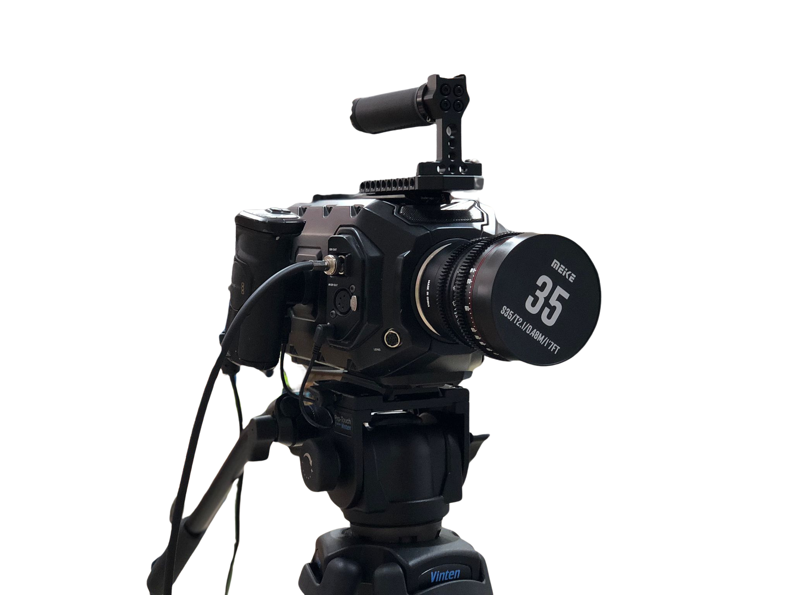

El mapa de nuestro cortometraje  PRESENTACIÓN Sinopsis del cortometraje Argumento de LA HERRADURA Justificación educativa del proyecto Objetivos generales y específicos CONTEXTUALIZACIÓN Centro educativo y alumnado Metodología empleada Niveles implicados FASES DEL PROYECTO Fase de preproducción Planificación y gestión del proyecto Elaboración y adaptación del guion original Confección del guion técnico y storyboard El casting Diseño del arte y atrezo Confección del dosier general Creación del logo Fase de producción Orden de rodaje y temporalización de la grabación Ensayos con los actores y actrices Los protagonistas de LA HERRADURA Elaboración del making of Fase de difusión y comunicación Redes sociales y difusión interna Camisetas promocionales Entrevista en Canal Radio Málaga Producto final Cortometraje LA HERRADURA Evaluación del proyecto Evaluación del alumnado CONCLUSIONES Y VALORACIÓN FINAL CRÉDITOS